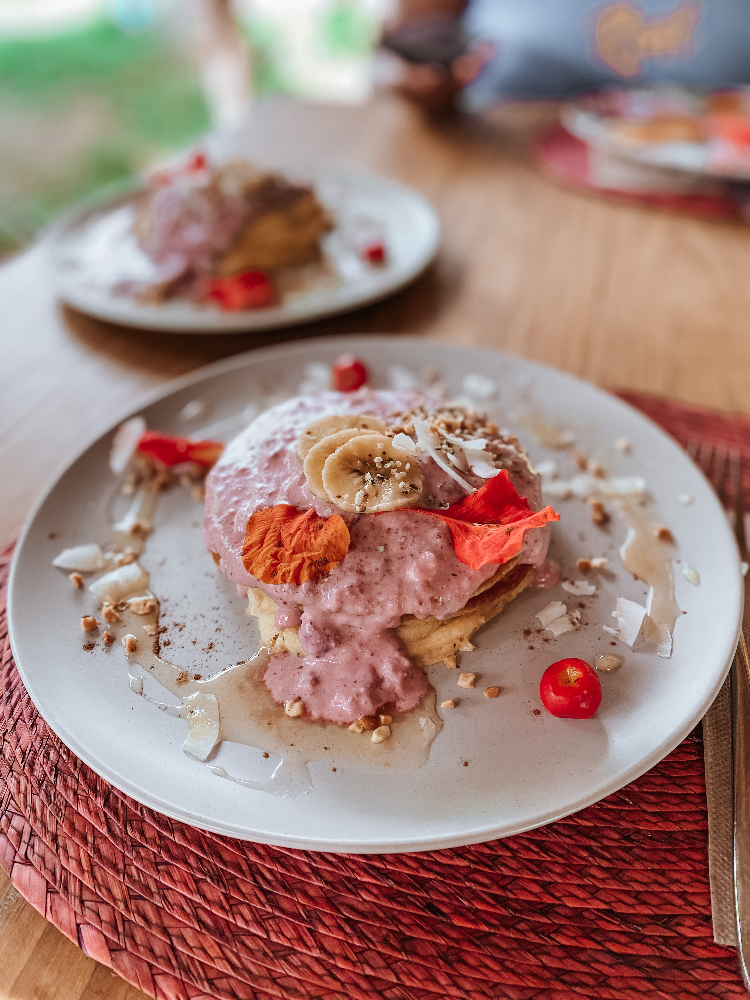
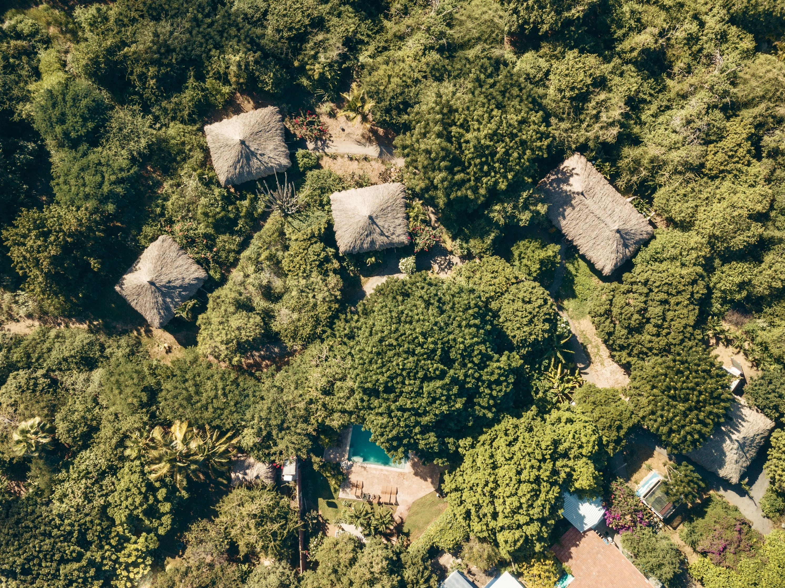
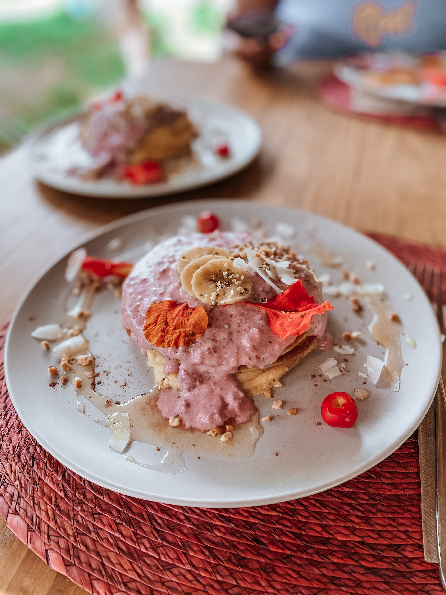
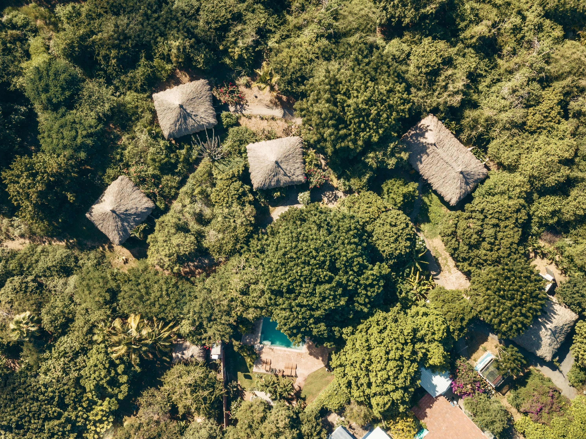

Maandag:
7:00 Yoga
8:15 Ontbijt, tijd voor omkleden, zwemmen en koffie.
9:15 Voorstelronde coaches & uitleg programma
9:45 Groepssessie Antoinet
11:15 Pauze
11:30 Groepssessie Marcel
13:00 Lunch
14:30 Middag vrij. Mogelijkheid voor het bijboeken van een massage, ruimte voor 1 op 1 sessie
18:00 Sunset Yoga
19:45 Diner op locatie door privé kok
Dinsdag:
6:15 Verzamelen en ontbijt met healty smoothies
6.30 Transfer Landhuis Jan Thiel
7:00 Yoga, silent walk zoutpannen en floating zoutwater
11:00 Brunch buffet op accommodate
12:00 Middag vrij
16:15 Groepssessie Marcel
18:30 Sunset Yoga
19:45 Diner op locatie door privé kok
Woensdag:
7:00 Yoga
8:15 Ontbijt
9:15 Transfer Dushi Terra
9:30 Groepssessie Antionet bij Dushi Terra,
ondertussen wandelen door de tuin en groenten en
kruiden
plukken
voor de lunch
12:30 Start Kookworkshop
15:00 Namiddag vrij
18:30 Sunset Yoga
19:45 Light diner
 


